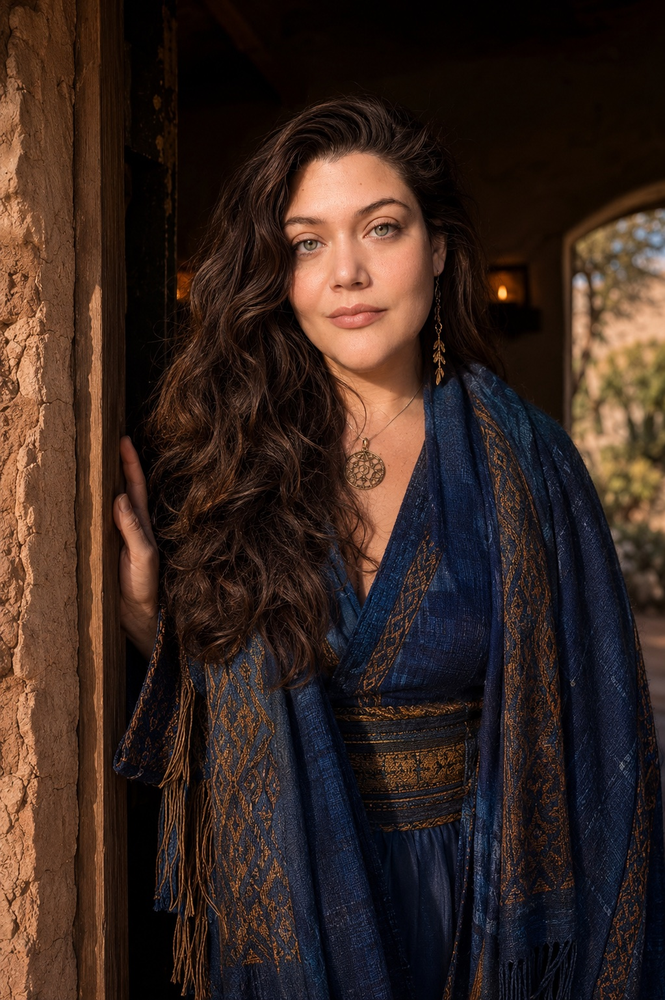

You have found your way to a closed and carefully tended circle.
Every door here opens the same way: with a conversation, one person at a time.
Choose your door, and the calendar opens just below.
The Intake & Inquiry
The doorway to ongoing work, one-on-one or in community.
A mutual interview
A Single Session
Standalone, and complete in itself. No intake is needed first.
What you might bring
These are all paid sessions, and they do require financial contribution, for the sustainability and equitability of this work. The work moves on a sliding scale: Accessibility · Community · Abundance · Patron. Payment is completed at the time of booking, by Venmo. Read Sacred Reciprocity.

This is a closed community: that is what keeps it safe for everyone inside it. Much of this work asks that you are well supported, mentally, emotionally, physically, and medically, and that there is a readiness for what you are stepping into. The intake is where that readiness is assessed, together.
I want to know who you are, so I can help you personally and uniquely. And I want you to know who I am.
That is important to establish before bringing you into the larger community.
Adi Marie
Once we have met, and we both feel you are ready, these are the paths that open.
There is a particular threshold — when the gifts begin to wake, when the calling grows too loud to set down, when the work asks to come through you and into the world. That threshold is rarely meant to be crossed alone.
This work may not be for you yet if
If now is not the time, you are welcome to stay close through the letters, and to return when you are ready.
Animism is the understanding that the world is alive, and that land, waters, plants, and Ancestors are kin to be known and tended.
We believe the world is a living membrane, a participatory process. The structures of our lives, and of reality itself, are not static or bound to form. They are living and changeable, and through our engagement, creation can be beckoned and guided alive.
In practice, this means re-engaging the imaginal realms: the creative part of the mind, conscious and subconscious, that dreams, imagines, and co-creates with the other creative forces of the world. Animism is engaging all of these relationships from a place of co-creative capacity, through ceremony, offering, divination, and the care we bring to all we touch.
No. Many who come have none. The intake is where we meet you exactly where you are, and where readiness is assessed, together.
If you are drawn to deeper work, one-on-one or in community, begin with the Intake & Inquiry. If you are carrying one question or crossroads right now, a single session of Guidance & Counsel or a Divination stands on its own. If you are unsure, the intake is always a good place to begin.
The majority of these sessions are held online. In-person events are held predominantly in Southern California, in or adjacent to Los Angeles County, with locations sent to those who have enrolled a few days before the experience.
For online sessions, the link arrives with your confirmation.
These are all paid sessions, and they do require financial contribution, for the sustainability and equitability of this work. The work moves on a sliding scale: Accessibility, Community, Abundance, and Patron. You choose the tier that is true for you. Read Sacred Reciprocity.
Please find a space to be comfortable where we may sit and connect in the depth of what brings you to this work, without distraction. Also, it is highly recommended to attend these sessions on a laptop or desktop, and not on a cellular or tablet device.
Some of these sessions require follow-up, supplementary intake, or documents. All of it is sent by email once your hour is held.
There are no cancellations or refunds. You may reschedule up to three days before your session, with the link in your confirmation email. Less than three days before, please reply to your confirmation email; the session is most likely forfeit.
Yes, what you share is held in confidence. When working in larger groups with a guardian or facilitator team, some details about how best to take care of and provide for you will be shared amongst the facilitator leads, to ensure your well-being.
No. The Animist Apothecary is a religious and spiritual ministry, not a medical entity or facility. Our ceremonies, sessions, and teachings are religious practice, not medical, psychological, or therapeutic services, and they do not diagnose, treat, or cure ailments. Please continue to see licensed professionals for medical and mental-health care.
Thank you for taking part in the great experiment of our times, the one we are all living through now. I believe that together, as a larger community, we can take all the wisdom, the pain, and the lessons we have learned, alone and together, and alchemize them, to help mend the great rift and rupture that humankind has both suffered and caused.
And I believe that, in choosing this work, a part of you believes that too.
To the part of you that feels this, and to all of you that feels the call to join this great effort, which wishes to express itself through each of us and through us all: it is my humble and profound honor. Thank you.
— Adi Marie